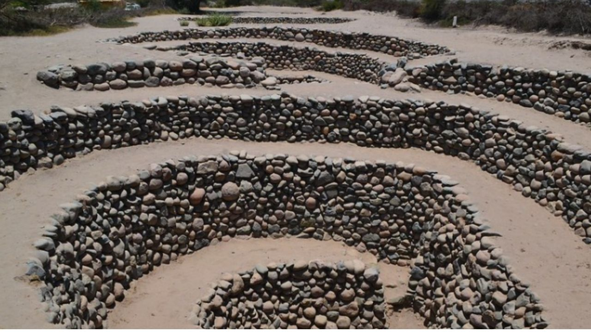
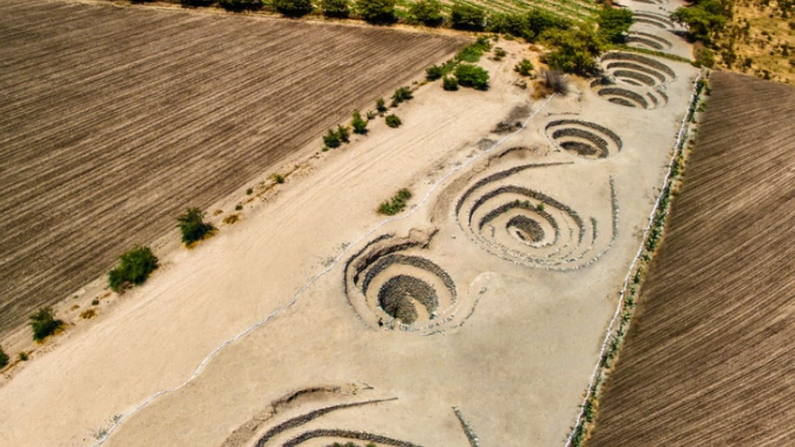
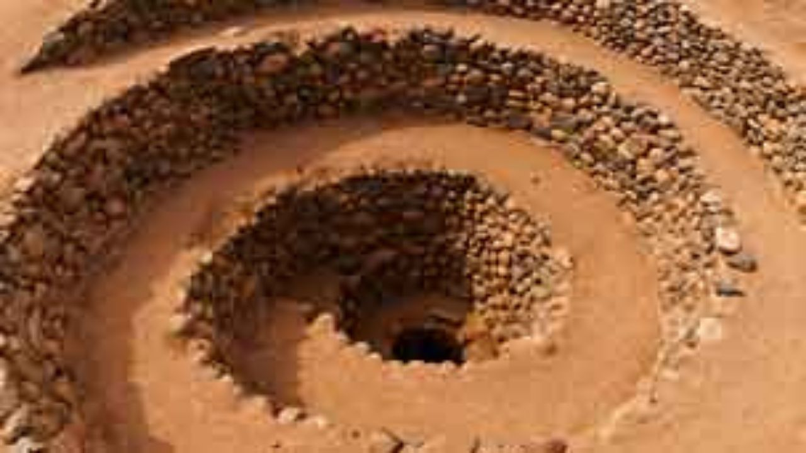

Cantalloc Aqueducts



If the Nazca Lines are Nazca's greatest mystery, then the Puquios (aqueducts) of Cantalloc are its greatest achievement, as their construction was far more complex and challenging.
Ancient aqueducts still sustain life in Nazca's desert landscape.
Detail
Since Nasca's narrow valley only supported a small farming area, and with the surrounding desert being one of the driest in the world, moving water from the valley was essential for the inhabitants' survival. Of the 36 Puquios, most are still functioning, providing life-giving water to the desert farms and the people of Nazca a testament to their construction over 1,500 years ago. Spanning kilometers, deep canals were excavated, lined with stone, covered with wood, and buried. They have never been fully mapped or excavated, but it has been suggested that the Nazca Lines depict maps and pointers to the subterranean aquifers that feed the Puquios system.
Include:
- Entrance Fee
- Entrance Fee
- Transportation
- Local guide
- Drop off at your hotel at the end of the tour
- English-speaking guide.
Not Include:
- Extras & gratuities.
- Accommodation
Price:
$20
Book Now